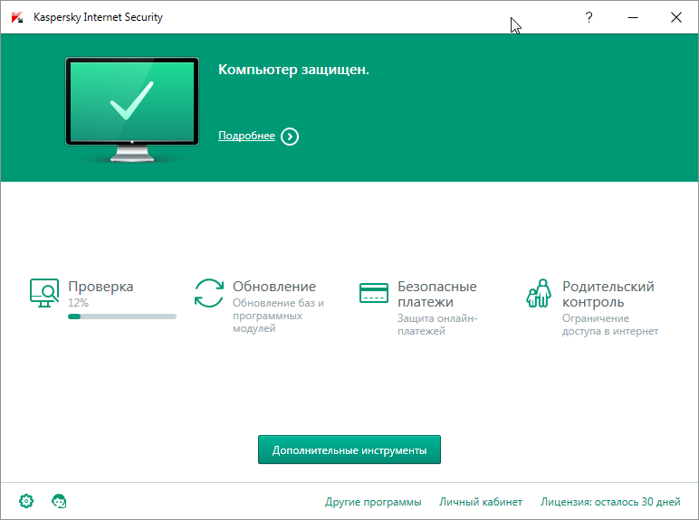

Какой антивирус лучше? Этот вопрос регулярно слышат сисадмины, программисты и вообще все, кто умеет переустанавливать Windows. В интернете обычно советуют почитать сравнения разных лабораторий (anti-malware, av-test и пр.) и сделать выбор. У меня же давно сложилось мнение, что эти тесты слишком лабораторные и в реальных условиях всё работает не так.
От антивируса требуется, чтобы хорошо ловил заразу и не тормозил работу на компьютере. У меня всегда на примете 1 платный и 1 бесплатный антивирус, которые я всем рекомендую.
Среди платных решений, я уже давно выбрал Kaspersky Internet Security, а среди бесплатных мои предпочтения несколько раз менялись и сейчас это 360 Total Security.
Практически все пользователи уверены в надёжности продуктов Касперского, но многие незаслуженно считают их очень тормозными. А ведь при правильной настройке его присутствие незаметно в повседневной работе.
KIS имеет гибкие настройки для каждого модуля и при этом интерфейс остаётся простым и логичным. Можно выключить все ненужные уведомления, оставив только важные для вас. Естественно есть возможность защиты паролем, также можно экспортировать и импортировать настройки программы, что очень удобно при переустановке Windows или переносе настроек на другой компьютер.
Кстати это один из немногих антивирусов, которые позволяют не только приостановить защиту в реальном времени, но и полностью выгрузить себя из памяти. У Касперского есть одна интересная особенность: в отличии от иностранных антивирусов, он не так бурно реагирует на пиратское ПО.
Как сделать чтобы не тормозило?
В целом Kaspersky Internet Security довольно быстрый при условии, что ваш компьютер имеет хотя бы 2х ядерный процессор и не менее 1 Гб памяти, но чтобы получить максимальную производительность нужно:
Это бесплатный антивирус от китайской компании Qihoo 360 (奇虎360), который интересен тем, что может использовать одновременно несколько антивирусных движков, не замедляя при этом работу на компьютере. Как все китайские продукты, имеет избыточный функционал, выходящий далеко за пределы простого антивируса. Например может мерить скорость загрузки компьютера. Мне он выдал вот что:
Ещё в комплекте есть ускорители компьютера, очистители мусора, настройка маршрутизаторов и ещё много чего. Дополнительными возможностями я обычно не пользуюсь.
После установки у вас будет активирован только родной движок антивируса, который имеет не очень большую базу, поэтому советую сразу открыть настройки и включить все остальные движки.
Единственный недостаток такого подхода – много ложных срабатываний и с этим придётся смириться. Радует то, что скорость работы от этого не уменьшается.
Антивирус очень хорош когда нужно поставить и забыть. Также можно выключить ненужные уведомления, чтобы он не отвлекал вас без надобности.
Обновление 2017 года
Пока я не занимался этим сайтом, Касперский выпустил бесплатную версию своего замечательного продукта. Отныне я всем советую именно Kaspersky Free, который от платной версии отличается лишь отсутствием дополнительного функционала, типа фаервола и менеджера паролей.
Ссылки официальные сайты:
360 Total Security - http://www.360totalsecurity.com/ru/
Продукты Касперского - http://www.kaspersky.ru/trials
Kaspersky Free - http://www.kaspersky.ru/free-antivirus
Другие антивирусы:
Программы для лечения заражённой системы (они или бесплатны или имеют пробный срок, достаточный для лечения):
{kind=link}
{kind=link}
{kind=link}
{kind=link}